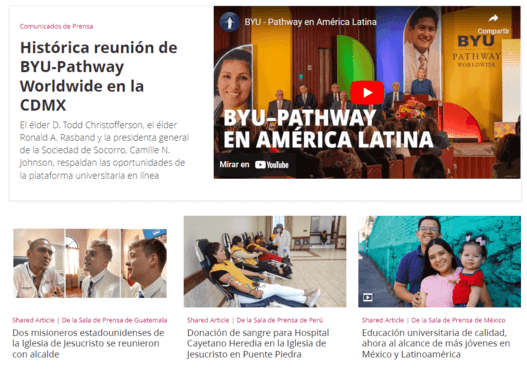
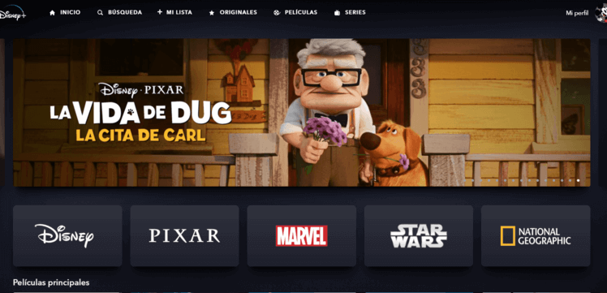
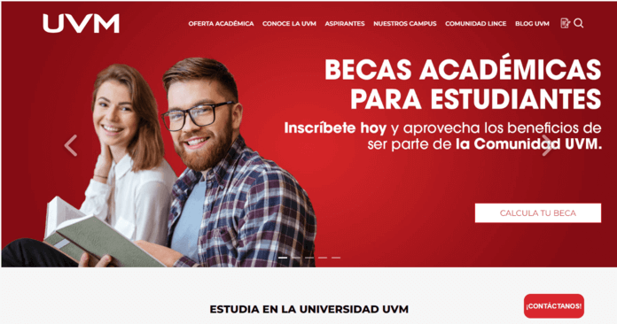

L02: Design Principles Document
Visual Hierarchy
Organization/Company: La iglesia de Jesucristo
Description: Visual Hierarchy is effectively employed on the Church of Jesus Christ of Latter-day Saints' news page to prioritize and guide user attention. This is achieved by prominently featuring important headlines with larger fonts and eye-catching styles, making them stand out.
Additionally, relevant images are strategically placed alongside the headlines, providing visual cues and enhancing the overall appeal. The news items are logically organized, allowing users to easily follow the order of importance or chronology.
Brief but informative descriptions accompany each news piece, offering additional context without overwhelming the reader. Consistent font styles and the judicious use of whitespace further contribute to a clean and user-friendly layout, ensuring that visitors can quickly identify and explore the news articles that interest them most.
Hick's Law
Organization/Company: Disney+
Description: Disney+ effectively applies Hick's Law in its user interface design to streamline the process of choosing movies and shows. By categorizing content into distinct sections such as Disney, Pixar, Marvel, Star Wars, and National Geographic, the platform reduces decision complexity. Users are presented with clear, easily recognizable categories, each containing related content.
This logical organization simplifies the selection process, as viewers can quickly narrow down their choices based on their preferences. Whether someone is in the mood for a Disney classic, a Marvel superhero adventure, or a National Geographic documentary, the categorized sections help users find their desired content with minimal effort.
Moreover, Disney+ optimizes the user experience by providing additional filtering options within each category, such as genre, release date, and popularity. These secondary choices further reduce the cognitive load, enabling users to make selections efficiently. In essence, Disney+ adheres to Hick's Law by presenting content in a structured and user-friendly manner, ultimately enhancing the platform's usability and viewer satisfaction.
Fitt's Law
Organization/Company: UVM
Description: The Fitt's Law is skillfully utilized in the user interface of the UVM (Universidad del Valle de México) website. Specifically, the "Calculate Your Scholarship" button, a pivotal action for prospective students, is prominently featured as a sizable and easily clickable element on the scholarship information page.
The decision to employ a large button adheres to Fitt's Law, which asserts that the time it takes to reach and click a target on a screen is inversely proportional to its size and proximity to the user's starting point. In this case, the "Calculate Your Scholarship"button's ample size and its placement within easy reach streamline the user's interaction.
This deliberate design choice minimizes the potential for mis-taps or misclicks on less critical functions and decreases the cognitive effort required to determine scholarship eligibility . Prospective students can confidently and efficiently calculate their potential scholarships with a straightforward click, enhancing the overall user experience and facilitating their educational journey at UVM.